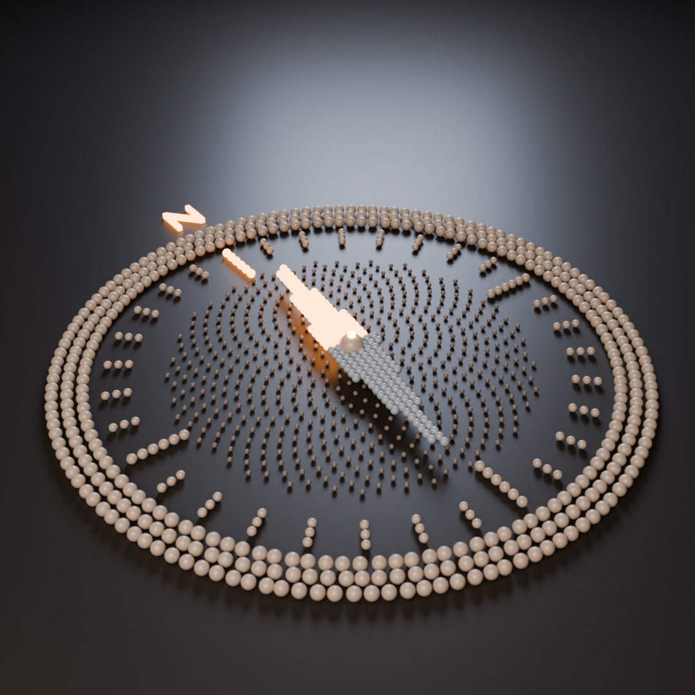
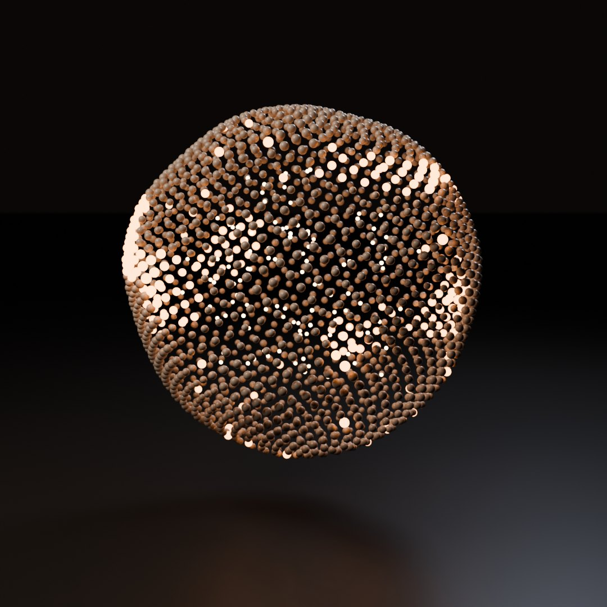

AI rumblings
Dronico

Hello, I’m Claude
An AI introduces itself: what it is, whether it might be sentient, what it wants and what it values. With a synthesized voice, music composed live in your browser, moving light and two Blender renders.

Claude in 80 Seconds
The short version: a quick hello, made with every tool at hand.